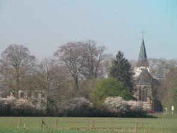

Nederland per bodemtype
Zo ziet Nederland net onder de oppervlakte er uit.Per deel van Nederland de bodemeigenschappen, het landschap en de beheermogelijkheden van bodems.

Per bodem wordt ingegaan op het ontstaan, de eigenschappen van het bodemprofiel, het landschap en de landbouw met zijn bodembeheer. De onderstaande informatie vindt u ook in een pdf: Bodems Nederland (5mb).
1. Flevoland

Belangrijke aandachtspunten
Bodemprofiel: Organische stofgehalten zijn te laag. Compost, vaste mest gebruiken en granen en grassen telen. Laag onder bouwvoor niet woelen, tenzij er een duidelijk storende laag is zonder gangen. Diepploegen: Alleen met deskundige begeleiding.
Bodemstructuur: Zoveel mogelijk granen en grassen. Niet te laat oogsten, rijpaden, Niet kerende grondbewerking, groenbemesters.
Wormenproblemen: Minder rooivruchten, aandacht voor bodemstructuur.
Vaste rijpaden: doen.
Niet kerende grondbewerking: Nog even wachten. Nu alleen op extensieve bedrijven zonder aardappels en peen.
Ontstaan
Lang geleden was er op de plaats van de huidige Flevopolders een veengebied. Vanuit het noorden is vooral na het begin van de jaartelling het veen weggeslagen en werden in het meer dat ontstond afwisselend meer zandige en meer kleiige lagen afgezet. Het materiaal werd aangevoerd vanuit de IJssel. Later drong vanuit noorden het zoute water meer op en werd vanuit zee materiaal afgezet. Deze bovenlaag is te herkennen aan het voorkomen van schelpen.

Het Flevogebied in de Romeinse tijd. Er was toen al veen weggeslagen, waardoor het Flevomeer ontstond.

Rond 800 na Chr. is het Flevomeer al veel groter.

Op sommige plaatsen, hier bij Schokland in de Noordoostpolder, zit het veen nog heel ondiep.

Bij de ontginning werd riet ingezaaid. Riet vormt diepe wortels, waar de gewassen nog steeds gebruik van maken. Hier op 70 cm diepte bij Lelystad.

Deze wortels kunnen heel diep de grond in via wormengangen. Bij de overweging of loswoelen van de laag onder de bouwvoor nodig is altijd eerste een kuil graven. Haal eventueel een deskundige er bij. Bestaande poriën kunnen door woelen verloren gaan.
Bodemprofiel

Bodem bij Ens in de Noordoostpolder.
De bovenlaag is geploegd. De witte stipjes in de bovenlaag zijn schelpen. Onderin zijn de lagen van de zandige en kleiige afzettingen te zien. Deze zijn zo duidelijk te zien omdat er vaak nog een beetje van het donkergekleurde oorspronkelijke verslagen veen in zit. Net onder de donkere bovenlaag zijn de lagen door woelen gemengd. Hierna zijn ze weer dicht gezakt omdat de landbouw op deze plek niet genoeg regenwormen in stand hield.

Bodem ten noorden van Lelystad (bedrijf Arenosa). De streepjes in de laag onder de bouwvoor zijn donker omdat ze wat veen bevatten dat daar bezonken is.

Bodem op Zonnehoeve bij Zeewolde in Zuidelijk Flevoland. Meer naar het zuiden in Flevoland worden de bodems zwaarder. De donkere kleur onderin duidt op wat venige bijmenging.
Landschap Er is geen gebied in Nederland dat zo sterk door de mens beïnvloed is als de Flevopolders. Toch heeft men bij de aanleg rekening gehouden met de oorspronkelijk natuur die hier thuishoort. Essen en populieren staan overal langs de wegen. De verschillende polders hebben wel een ontwikkeling doorgemaakt. In de oudste polder, Noordoostpolder, in zekere zin vanuit de Bauhausgedachte ontworpen, staat de mens centraal. Eenvoud, maar toch mooie dorpen met wat bos en een zorgvuldig uitgedachte architectuur. Nagele is daar een mooi voorbeeld van. De boerderijen buiten de dorpen zijn omgeven door opgaande vegetatie. In Zuidelijk Flevoland heerst de ratio. Toch weten diverse bedrijven er een stukje warmte in te brengen. Zie bijvoorbeeld Zonnehoeve bij Zeewolde.

Boerderij bij Schokland in de Noordoostpolder, door groen omgeven

Boerderij in Oostelijk Flevoland

Zuidelijk Flevoland
Landbouw De organische stofgehalten van de bodems in Flevoland worden lager door minder teelt van organische stof leverende gewassen. De bodemstructuur gaat achteruit door gebruik van zwaardere machines en door meer teelt van gewassen die laat geoogst worden onder vaak natte omstandigheden. Wat voor de bodem belangrijk is op een rij.

Suikerbiet is slecht voor een goed bodembeheer. Late oogst onder ongunstige omstandigheden. Suikerbiet levert ook weinig organische stof. Voor aardappel geldt hetzelfde.

Luzerne, een ideaal gewas. In de winter de grond bedekt en het is het lievelingsvoer van pendelende regenwormen die de ondergrond toegankelijk maken. Veehouders, denk eens aan luzerne als derde gewas naast gras en mais

Tarwe, ook ideaal. Oogst als de grond nog droog genoeg is voor berijden, levert veel organische stof en de vroege oogst geeft de mogelijkheid voor inzaai van een groenbemester.

Grond met grote wormenproblemen. Door intensieve teelt van aardappelen, suikerbiet en groenten verdicht de grond en het vele voedsel van het loof geeft teveel wormen in de lossere bovenlaag met versmering tot gevolg.

Losmaken van de ondergrond
Deze bodem bij Ens laat mooi zien hoe er (niet) met een verdichte laag onder de bouwvoor moet worden omgegaan.
Onder de bouwvoor van ca 30 cm is een laag tot ca. 43 cm die ooit door woelen is losgemaakt, maar nu weer volledig verdicht is. Dit woelen heeft dus geen zin gehad. Wat had moeten gebeuren is na het woelen direct een diep wortelend gewas zaaien en vervolgens zo werken dat diepgravende wormen zich goed kunnen ontwikkelen. Dat wil zeggen organische mest gebruiken en vlinderbloemigen naast gras en granen telen. Verder een groot deel van het jaar de bodem bedekt houden. De diepwortelende wormen halen hun voedsel namelijk boven de grond.

Structuurbederf en daardoor groeiproblemen in tarwe.

Blauwe plekken door luchtgebrek in de bouwvoor tijdens de inzaai van zomertarwe in het voorjaar.

In het voorjaar wordt vaak te vroeg over de grond gereden. De bovengrond is dan wel droog genoeg, maar de ondergrond niet.

Problemen met de bodemstructuur geven ook problemen met de zaaibedbereiding. Een slechte kieming en toegenomen onkruidhinder zijn het gevolg. Hier bij ui.

Gras oostelijk van Lelystad met een sterk verdichte bodemstructuur. Door de dichte structuur kunnen de graswortels niet goed de grond in. Wanneer bij de drijfmesttoediening sleuven in de grond worden getrokken droogte de grond daar op en kunnen in deze sleuven de wortels wel de grond inkomen.

Blauwe plek onder gras door luchtgebrek na verdichting.

Alle aandacht moet in de Flevopolders bij organische stof aanvoer liggen. GFT-compost kan hierbij helpen. Het draagt vooral bij aan onderhoud van het organische stofgehalte. Dus aan vochthoudend vermogen en vasthouden van sommige voedingsstoffen. Voor het bodemleven heeft het minder betekenis.

Een grasland oostelijk van Lelystad met een sterk ver Verdichte grond in de bovenste 20 cm door achterwege laten van ploegen bij onderzoek naar Niet Kerende Grondbewerking (NKG) op de Broekemahoeve bij Lelystad. NKG kan alleen op extensieve bedrijven met weinig of geen rooigewassen en dan alleen op wat zwaardere grond.
Diepploegen. Soms een succes, soms grote problemen. Alleen doen met deskundige begeleiding. Aan de oppervlakte komst soms, zoals hier, zeer humusarm zand te liggen.

In het voorjaar tot aan de horizon kale grond. Een begroeiing is voor de grond veel beter maar past moeilijk in het (te) intensieve bouwplan.

Gele mosterd als groenbemester bij Key/vd Dries in Ens.

Fruitteelt wordt in de Flevopolders regelmatig aangetroffen. Smakelijk fruit produceren in de Flevopolders is niet makkelijk. De groeikracht is erg hoog en het fruit heeft daardoor vaak minder smaak

Met behulp van GPS steeds hetzelfde rijpad gebruiken. Ideaal voor behoud van een goede bodemstructuur. Hier bij Joost van Strien in Ens
Zeeklei

Belangrijke aandachtspunten
Profielverbetering: Wat de gronden in De Flevopolders niet hebben, maar de overige zeekleigronden meestal wel is een poreuze sponsstructuur in de ondergrond. Indien aanwezig, hierin niet woelen. Tussen bouwvoor en de laag met sponsstructuur kan een verdichte laag aanwezig zijn. Indien sterk storend woelen en daarna een diepwortelend gewas inzaaien.
Overige aandachtpunten: Vergelijkbaar met Flevoklei:
Bodemprofiel: Organische stofgehalten zijn te laag. Compost, vaste mest gebruiken en granen en grassen telen. Laag onder bouwvoor niet woelen, tenzij er een duidelijk storende laag is zonder gangen. Diepploegen: Alleen met deskundige begeleiding.
Bodemstructuur: Zoveel mogelijk granen en grassen. Niet te laat oogsten, rijpaden, Niet kerende grondbewerking, groenbemesters.
Vaste rijpaden: doen.
Niet kerende grondbewerking: Nog even wachten. Nu alleen op extensieve bedrijven zonder aardappels en peen.
Ontstaan Zeekleigronden zijn, met uitzondering van die in Flevoland, ontstaan in schorren en kwelders. Tussen de vegetatie kon in rustiger water klei bezinken.Doordat de afzetting van zeeklei in een vegetatie ontstond is de grond van nature poreus, ook tot wat grotere diepte. In de landbouw is het belangrijk om dit zo te houden.

Schor in Zeeland. Tussen de planten die hier groeien kan klei bezinken.
Bodemprofiel Van nature is de grond diep doorwortelbaar, maar heeft een laag organische stofgehalte. Wanneer er in een ver verleden bos op groeide kan het organische stofgehalte hoger zijn. Vooral gronden die in de ondergrond zandiger worden leveren het hele jaar door vocht aan de vegetatie.

De regenworm lumbricus terrestris in zijn gang op 70 cm diepte bij Jellum onder Leeuwarden. Let ook op de vele poriën afkomstig uit de tijd toen hier nog een kwelder was.

Diep humushoudende grond bij Broek in Waterland in Noord-Holland. Ideaal voor de koolteelt.

De Wieringermeer. Het organische stofgehalte is laag, maar door een goed beheer kunnen de wortels diep de grond in.
Luzerne gaat graag diep de grond in (De Streek, Noord-Holland).

Luzerne wil diep wortelen, maar heeft hier wel een wormgang nodig om echt diep te komen (Wieringermeer).
Landschap

Tarweteelt in de Dollard (Groningen)

Akkerbouw Noord-Friesland

Tulpenteelt Wieringermeer (Noord-Holland)

Veehouderij in de Beemster (Noord-Holland)

Teelt plantuien in de Hoeksche Waard (Zuid-Holland)

Akkerbouw West-Brabant
Tarwe, Walcheren
Landbouw Verhoging van het organische stofgehalte, verzorging van de bodemstructuur en bodemleven zijn van groot belang op de organische stofarme zeekleigronden. Bodemverzorgende gewassen als granen en grassen, groenbemesters, zorgvuldig berijden en bewerken, vaste mest en compost zijn belangrijk.

Na de suikerbieten in de Wieringermeer. De verdichte laag onder de bouwvoor is bij wijze van spreken al van ver zichtbaar

Gebrek aan lucht geeft een blauwe kleur van gereduceerd ijzer en is schadelijk voor de wortelontwikkeling

Op Walcheren (Zeeland) laten veldbonen (rechts) een betere structuur na dan mais (links).

Koolstofrijke gewasresten van korrelmais in combinatie met onderzaai van klaver is, hier in Zeeuws-Vlaanderen, de ideale voeding van het bodemleven.
Nieuwe alinea

Goed geslaagde witte klaver in tarwestoppel in Zeeuws Vlaanderen

Bouwvoor met zeer goede bodemstructuur op een akkerbouwbedrijf in de Hoeksche Waard
Oude klei en löss
Belangrijke aandachtspunten
-Bij onderwerken van koolstofrijke materialen altijd eerst stikstofrijke mest, bijvoorbeeld drijfmest, uitrijden.
-Bij groenbemestermengsels koolstofrijke en stikstofrijke mengen.
-Stimuleer regenwormen. Zorg voor verteerbare organische stof en bodembedekking in een groot deel van het jaar.
Ontstaan Löss in Zuid-Limburg en rivierklei langs de Maas en langs voormalige Rijnarmen in de Achterhoek behoren tot de oudste afzettingen van Nederland. In deze bodems vinden processen plaats die we in Nederland verder niet kennen. Deze processen hebben een grote invloed op landbouw en natuur. De löss is tussen 8.500 en 11.000 jaar geleden door de wind vanuit het Noordwesten afgezet. De oude klei is afgezet langs de Maas en is deels ouder en deels jonger. Bij Montferland in de Achterhoek liggen oude afzettingen van de Rijn.

De Rijn stroomde ooit langs de Noordzijde van Montferland. De oude Rijnafzettingen hier zijn ontkalkt. Deze afzettingen zijn aangeduid op deze bodemkaart met bodemtype nr. 70.

Het heuvellandschap van Zuid-Limburg bestaat uit lössafzettingen. Deze liggen op oude maasklei. In Midden- en Noord Limburg liggen terrassen met oude ontkalkte afzettingen van de Maas aan de oppervlakte.
Bodemprofiel De lössafzettingen in Limburg zijn ooit kalkrijk afgezet, maar de kalk is nu weg en ook een deel van de fijne klei is naar beneden gespoeld. De oude kleiafzettingen langs de Maas en bij Montferland zijn ook ontkalkt en vooral bij Montferland is ook een deel van de klei uit de bovengrond weggespoeld en binnen ca 50 cm weer ingespoeld.
Profiel in löss op een niet geërodeerd hoger gedeelte. Uit de bovenlaag is klei weggespoeld en is de grond zandiger geworden. Daaronder is de klei ingespoeld en is een stugge laag ontstaan.

Löss Op 70 cm diepte. Löss is vaak afgezet in een grasvegetatie en daardoor zeer poreus. De grote gangen zijn regenwormgangen.

Zware ontkalkte afzetting van de Rijn bij Montferland. Bovenin is de grond wat lichter. Daaronder zwaarder door kleiinspoeling en zeer stug.
Landschap Zowel de lössafzettingen in Limburg als de oude afzettingen van Maas en Rijn zijn al heel lang in cultuur en landbouwpercelen met veelvormige blokken zijn kenmerkend. In Limburg bossen op de heuvels en hagen en rijker bos op de hellingen. Bij goed ontwaterde afzettingen van Maas en Rijn is de eik langs percelen en wegen dominerend.

Oud cultuurlandschap op geërodeerde löss in Zuid-Limburg bij de grens met België. Bovenop de heuvels niet geërodeerde löss met een arm bos als vegetatie.

Vooral eiken op de oude Rijnafzettingen rond Montferland.
Zomaar een berk bij Drempt in Montferland. Het lijkt dan dat we hier op zand zijn, maar het is toch echt klei.
Landbouw De lössgronden en de oude kleigronden langs de Maas en bij Montferland zijn in zekere zin gedegradeerde gronden. De kalk is weg, de klei die uit de bovengrond is gespoeld en nu in de laag onder de bouwvoor zit, is gevoelig voor verdichting. De grond is erosiegevoelig geworden. De wat zwaardere gronden zijn alleen geschikt voor grasland. De overige potentieel wel geschikt tot heel mooi, mits het juiste bodembeheer wordt toegepast

Verslempte löss in Zuid-Limburg. Een goede pH en voldoende aanvoer van organisch materiaal kunnen dit voorkomen.

Ondergeploegde koolstofrijke maisresten zijn op deze organische stofarme löss na een jaar nog niet verteerd. Waar veel koolstof is moeten ook stikstofrijke organische verbindingen uit bijvoorbeeld mest of groenbemesters zijn.

Tarwe met oppervlakkig ingewerkte gewasresten voorkomen verslemping.

Montferland. Dichtgereden laag onder de bouwvoor belemmert afvoer van water. Stimuleren van regenwormen is nu belangrijk.

Montferland. Losmaken van de laag onder de bouwvoor. Dit alleen doen na een beoordeling van een profielkuil

Op 25 cm wormgangen. Bij meer dan 4 wormgangen per 400 cm2 niet woelen want dan verdwijnen deze gangen en wordt de grond juist meer verdicht (Montferland).

Verslemping na jarenlange teelt van mais en bemesting van drijfmest. Mais en drijfmest kunnen geen vruchtbare bodem onderhouden (Montferland).

Bij een slechte structuur is het niet mogelijk een mooi zaaibed te krijgen (Montferland).
Veenkoloniën

Belangrijke aandachtspunten
Bodemprofiel: Organische stofgehalten zijn vaak wel redelijk, maar een zure zwarte smerende humussoort overheerst. Verteerbare organische stof aanvoeren. Geen groencompost, eventueel wel een rijkere GFT-compost. Groenbemesters na granen en andere gewassen waar mogelijk. Laag onder bouwvoor bij verdichting woelen en direct een diepwortelend gewas inzaaien.
Ontwatering: Bij natte omstandigheden draineren. Het gehele jaar geen grondwaterstanden binnen 50 cm. In de zomer indien mogelijk 80 cm onder maaiveld.
Bodemstructuur: Zoveel mogelijk granen en grassen. Niet te laat oogsten, vaste rijpaden. Indien mogelijk de grond in de winter bedekt houden. Groenbemestermengsels met makkelijk verteerbare plantenresten, bijvoorbeeld vlinderbloemigen. Ploegen met vorenpakkers.
Groenbemesters: Waarschijnlijk is de veel geteelde bladrammenas niet de beste. Mengsels, zoals Betamax TR, moeten meer aandacht krijgen. Ook Tagetes kan van waarde zijn.
Ploeg, spitmachine of vaste tandcultivator. De ploeg wordt minder vaak gebruikt vanwege de kosten. Wat op langere termijn het beste is, is niet bekend. Op korte termijn is voor bodemstructuur, tegengaan slemp en zuustofgehalte de ploeg het beste.
Vaste rijpaden: doen.
Niet kerende grondbewerking: Nog even wachten. Moet op deze grond eerst nog verder ontwikkeld worden. Grond gaat teveel dicht zitten.
Ontstaan Veenkoloniale gronden zijn zandgronden die ontstonden doordat het veen dat er op lag is afgegraven. Een restant van het veen werd door de bovengrond gemengd. Het veen werd gevormd in lagere gedeelten van een groot zandgebied van Noordwest Europa. Dit gebied lag in de ijstijden ingeklemd tussen grote ijsvlakten zonder vegetatie en de wind verspreidde zand in de vorm van een deken en heet daarom dekzand. Waar een beek of rivier het water niet kon afvoeren ontstond later veen.

25.000 jaar geleden Omgeven door ijs (blauw) is er een groot gebied (geel) waar zandverstuivingen plaatsvonden. Dit zand ligt in Noord,- Oost- en Zuid-Nederalnd nog aan de oppervlakte. Elders is het bedekt met veen en klei.
De eerste vegetatie, ca. 8000 jaar geleden, bestond uit pijpenstrootje en planten als veenmos, wollegras, dopheide en veenbies.

Dat er pijpenstrootje groeide weten we omdat de wortelgangen ervan nu nog steeds zichtbaar zijn.

Later ontstond er dik pakket veen, wat werd afgegraven voor turfwinning

Duizenden jaren oude wortelresten van pijpenstrootje in de ondergrond. Deze poriën worden nu weer gebruikt door landbouwgewassen.
Bodemprofiel Het bodemprofiel is eenvoudig van opbouw. Er is een donkere bovenlaag die meestal vrij plotseling overgaat in een humusarme zandondergrond. Soms is er nog een laag veen tussen beide aanwezig. De donkere bovengrond is ca. 40 cm dik. Dat is de dikte die bewerkt werd bij de ontginning. De bovengrond wisselt sterk in organische stofgehalte. Door lange periodes met gebruik van minerale mest, eerst vooral chilisalpeter, zijn de organische stofgehalten steeds lager geworden en is vooral de zwarte humus van het veen met ongunstige eigenschappen nog aanwezig. De ondergrond bevat vaak nog ingespoelde humus uit de “pijpenstrootje periode” van ca. 8000 jaar geleden en is daarom verdicht.

Sappemeer, Groningen

Dedemsvaart, Overijssel

De Peel, Noord-Brabant
Hoogveenrestant bij Coevorden
Landschap Het veenkoloniale gebied was oorspronkelijk hoogveen en dit was het enige grote gebied in Nederland zonder bomen. Na ontginning kenmerken de veenkoloniale gebieden zich nog steeds door een grote openheid. Langs wegen zijn wel vaak bomen aangeplant, vaak eik. Hoogveen groeit boven het grondwater uit en is door het aanleggen van vaarten makkelijk te ontginnen. Een rechthoekig systeem van kleine naar steeds grotere watergangen is kenmerkend voor veenkoloniën.

Veendam, Groningen

Sappemeer, Groningen, na tarwe

Dedemsvaart, Overijssel, aardappel
Landbouw De bodemkwaliteit in de veenkoloniale gebieden staat al langere tijd onder druk. Veel geteelde gewassen als aardappel en suikerbiet kunnen geen voldoende hoog organische stofgehalte onderhouden. De eenzijdige humus uit het voormalige veen kan geen goede bodemstructuur en voldoende bodemleven onderhouden. Een overzicht van een aantal maatregelen voor behoud of verbetering van de bodemvruchtbaarheid.

Wat aandacht nodig heeft: 1. Slechte bodemstructuur. Laag organische stofgehalte en weinig bodemleven bouwvoor. Hier bij Hijken, lelieteelt met verdichte bouwvoor.

Wat aandacht nodig heeft: 2. Verdichte ondergrond in de Peel.
Wat aandacht nodig heeft: 3. Verstuiving

Bij Bareveld in Groningen staat een monument ter ere van Klaas de Vrieze, de voorlichter die in de 19e eeuw chilisalpeter propageerde. Onderschrift: Hij wees de landbouw nieuwe wegen, den boer tot heil het land ten zegen. Later bleek de chilisalpeter de belangrijkste factor in de verarming van de veenkoloniale gronden.

Woelen van de ondergrond. Altijd alleen na een profielbeoordeling en altijd laten volgen door een diep wortelend gewas. Bijvoorbeeld graan, bladrammenas of rode klaver in grasmengsel.
Aanleg drainage. Een goede ontwatering is een voorwaarde voor een vruchtbare bodem. Grondwaterstand in het voorjaar
Groenbemesters waar mogelijk. Bladrammenas, beworteling van de bodem valt tegen. Japanse Haver heeft een intensieve beworteling. Mengsels zijn nog ontwikkeling.

Eenzijdige zwarte smerende humus aanvullen met bodemleven voedende organische stof. Dierlijke mest, vooral vaste mest en GFT-compost zijn mogelijkheden, geen groencompost. Aandacht voor organische stof leverende gewassen.
Hoofdgrondbewerking. Spitten (foto) en vaste tand cultivator zijn nu populair. Of op lange termijn ploegen toch beter is, is nu nog onduidelijk.
Bodemopbouw na de bruinkoolwinning
Rekultivierung bij de bruinkoolgroevenVoorbeeld van een geïntegreerde meerjarige aanpak

Belangrijke aandachtspunten
Een arme grond vruchtbaar maken
Gestart wordt met gewassen die geen hoge eisen aan bodemstructuur en voedingsstoffenvoorziening stellen. De telen gewassen moeten:
-diep wortelen
-veel gewasresten en wortels achterlaten
-stikstof binden
De nadruk ligt op luzerne, luzerne/grasmengsel, veldbonen, honingklaver, wintergranen en na enige jaren mais na een vlinderbloemige.
Wat kunnen we leren van het opnieuw in cultuur brengen van voormalige bruinkoolgroeven?Hoe kun je arme gronden vruchtbaar maken. Vlak over de grens in Duitsland liggen interessante voorbeelden. De bovenlaag van dichtgestorte bruinkoolmijnen worden volgens een strak plan vruchtbaar gemaakt. Eigenlijk had er bij de gronden van de Flevopolders en de heideontginningsgronden ook zo’n plan moeten zijn. Bij de Flevopolders is daar ook wel aan gewerkt, maar toen de Rijksdienst IJsselmeerpolders opgeheven werd verdween alle beleid en alle kennis. Luzerneplanten in bermen van wegen herinneren nog aan de aanpak.In het volgende een korte beschrijving.
Volstorten van de diepe bruinkoolgroeven

Beschrijving van de bij Jänswalde toegepaste methode. (Haubold, Schwarzenberg, 2009) De methode van Rekultivierung berust op ruim 100 jaar ervaring. Voor de bovenlaag wordt gebruik gemaakt van löss, rivierklei of mergelleem. Wanneer het vochtgehalte bij veldcapaciteit (24 uur na intensieve regen) meer dan 10 vol.% wordt een 1 meter dikke laag aangebracht. Is dit minder dan 10 vol.% dan wordt een laag dikker dan 1,20 m aangebracht. Het doel van de maatregelen is om in de laag 0-30 cm in 10 tot 14 jaar tot een totaal koolstofgehalte van 1 tot 1,5% te komen. Gewasresten, vaste mest en compost moeten hiervoor zorgen.Er wordt een ploegdiepte van 20 tot 30 cm aangehouden en eenmaal in de vruchtopvolging wordt gewoeld tot 40 tot 50 cm. Gestart wordt met gewassen die geen hoge eisen aan bodemstructuur en voedingsstoffenvoorziening stellen. De telen gewassen moeten:-diep wortelen-veel gewasresten en wortels achterlaten-stikstof bindenDe nadruk ligt op luzerne, luzerne/grasmengsel, veldbonen, honingklaver, wintergranen en na enige jaren mais na een vlinderbloemige.Meerjarige luzerne moet 40 tot 50% en graan 25 tot 35% van de gewassen innemen. De bemesting is de eerste jaren hoger dan de onttrekking. Na verloop van jaren kan de gewaskeuze ruimer worden. Na 60 tot 80 jaar heeft de bodem een bevredigende kwaliteit bereikt.
Jülich, de elektriciteitscentrale, een kluit met mooie structuur en een grauwe worm.
kluit met mooie structuur
Een grauwe worm.
Zware kalkloze klei
Ontstaan
Door stijgen van de zeespiegel en dalen van de landoppervlakte is er vooral tussen 250 en 600 na Chr. veel zware klei afgezet. Dat gebeurde in rietmoerassen en elzen- en wilgenbossen. Wanneer de klei afgezet werd in brak water met riet kreeg de klei ongunstige eigenschappen. Ze wordt knipklei genoemd.

Belangrijke aandachtspunten
Goede ontwatering.
Zo min mogelijk herinzaai.
pH voldoende hoog.
Grasklaver en geen gras.
Mest niet bovengronds uitrijden.
Beweiden in plaats van maaien.
Beperk werktuiggewicht, lage bandenspanning.
Houd fosfaatbemestingstoestand voldoende.
Bevorder regenwormen.
Kies grassoorten en -rassen met een diepe en intensieve beworteling
Gerst meezaaien bij herinzaai.
Gebruik een snelgroeiend / diepwortelend gewas als dekvrucht bij
herinzaai.
Sikstofbemesting beperken.
Uitstel van stikstofgift na maaien.
Stikstofgift toediening onder het maaiveld, niet oppervlakkig.
Maai minder frequent.
Beregen minder frequent.
Voorkom droogtestress.
Zie ook: Goud van Oud Grasland. Louis Bolk Instituut 2016-011 LbD

In een dergelijke vegetatie (riet en elzen, hier in de westelijke Betuwe) is de zware klei afgezet
Zware klei kan alleen bezinken als het water vrijwel stil staat en dat kan alleen bij een dichte vegetatie. Die dichte vegetatie geeft veel zure stoffen en die lossen de kalk op. Zware klei is daarom altijd zuur.BodemprofielZware kleigronden drogen in de zomer uit en er vormen zich dan scheuren. Door de scheuren kunnen wortels naar beneden. Er kunnen evenwel ook kluiten in de scheuren vallen. Wanneer in herfst en winter de grond weer nat wordt zwellen de scheuren weer dicht, maar als er kluiten in gevallen zijn is er niet genoeg ruimte en wordt de grond zeer dicht. Een diepe beworteling is belangrijk voor de vochtvoorziening. Via de gangen van diepgravende regenwormen kunnen wortels naar beneden groeien. Er is dan meer vocht voor het gewas beschikbaar.
Mooie dikke zode bij gras op zware klei bij Wirdum in Groningen. Ook de laag hieronder is, hoewel niet humusrijk, nog relatief goed doorwortelbaar.

Zware komklei in de Betuwe. Bovenin een goede structuur, Daaronder grote prismatische structuren. De twee donkere lagen zijn gevormd in een periode met dichtere vegetatie en zijn humusrijker

Zware klei onder gras in de Betuwe.

Onderin is de Betuwse klei verdicht en blauwe kleuren door de aanwezigheid van ijzer en wat organische stof.
Zware klei bij Easterein in Friesland. De zware kleigronden in Groningen en Friesland horen tot de zwaarste van Nederland.
Wormgangen zijn steeds belangrijk voor de beworteling van diepere lagen. Hier bij Burgwerd in Friesland.
De grauwe worm A. Caliginosa aan het werk bij Wiuwert in Friesland.
In oude wormgangen bevindt zich vaak humus en er vormt zich daar dan een minibodem (Baaium Friesland).
Dankzij de wormgang kan gras hier diep wortelen (Rasquert, Groningen).

Ook hier alleen diepe beworteling op 20 cm diepte dankzij wormgangen (Wirdum, Groningen).
LandschapOp zware klei is door de moeilijke bewerkbaarheid meestal alleen maar gras te telen. Er wordt beperkt akkerbouw bedreven. Omdat snijmais zo goed in het voederrantsoen past wordt dit ook wel geteeld, maar met sterk wisselend resultaat. De open vlakte van het landbouwgebied wordt hier en daar onderbroken door populieren- of wilgenteelt, oude eendenkooien en natuurgebieden.

Zware klei (knipklei) bij Ee in Friesland

Gras op zware klei met op de achtergrond de toren van Middelburg op Walcheren.

Komklei bij Culemborg in de Betuwe

Komklei bij Culemborg in de Betuwe
Landbouw Zware kleigronden vergen veel aandacht. Gaat er iets mis dan is dat niet snel te herstellen. Een goede ontwatering is belangrijk (greppels, drains). Berijden onder natte omstandigheden moet zo veel mogelijk vermeden worden. Verzorg de regenwormen (Vlinderbloemigen in het grasmengsel, koeien in de wei, goede zuurgraad,) en de rest van het bodemleven. Beperk opnieuw inzaaien.

Zware klei met een mooie 6 cm dikke zode bij Garrelsweer in Groningen. Daaronder is de grond wat dichter, maar er zijn veel wormgangen waardoor de wortels naar beneden kunnen. Niet scheuren en niet opnieuw inzaaien tenzij dat vanwege een slechte grasmat dringend nodig is.

Dit grasland bij Wirdum in Groningen is 6 jaar geleden geploegd en niet goed verzorgd. De zode is dun en daaronder is beworteling niet goed mogelijk.

Knipklei bij Wiuwert in Friesland. Een mooie goed doorwortelde zode op een verdichte ondergrond

Proefje met stikstofbemesting op bodem met slechte structuur, 6 jaar na ploegen, bij Wirdum. De reactie op bemesting is extreem groot. De bodem zelf kan bijna niks. Op de voorgrond geen stikstof (N) bemesting, daarachter 150 kg N per ha en daarachter 300 kg N per ha.

Knipklei bij Wiuwert in Friesland. Een mooie goed doorwortelde zode op een verdichte ondergrond.

De zode is wel mooi bij deze knipklei bij Wiuwert, maar daaronder weinig bewortelingsmogelijkheden. Dat is gebruikelijk op knipkleigronden.

Extreme verdichting tussen 20 en 30 cm. Knipkleigronden zijn afgezet in een brak rietmoeras en de vele magnesium uit het zeewater maakt de bodem onhandelbaar.

Greppels zijn de basis voor de ontwatering op knipkleigronden. Voor een efficiënt gebruik worden veel knipkleigronden toch geëgaliseerd, geploegd, gedraineerd en opnieuw ingezaaid.

Klaver in het gras lukt meer in deze oude zode. Scheuren en opnieuw inzaaien lijkt de enige o0plossing.

Na scheuren is de bodemstructuur sterk verslechterd en het organische stofgehalte lager geworden. Klaver groeit er nu evenwel prima en regenwormen zijn dol op de klaverwortels.

Links een niet gescheurde bodem. Rechts een bodem na scheuren. Bij de rechter bodem een dichte structuur, maar volop klavergroei en regenwormen.

Dichte structuur na scheuren. Wel klaverwortels met wortelknolletjes.

Als het enigszins kan gras op zware klei niet scheuren. Moet het toch dan rode klaver meezaaien. Deze heeft krachtige wortels die diep de grond in gaan.
Een goede ontwatering is essentieel. Hier een slecht ontwaterde grond.
Het bodemprofiel bij deze slecht ontwaterde grond. Dichte structuur, weinig wortels.

Een goed ontwaterde grond in de Betuwe

De bodem van de goed ontwaterde grond. Goede structuur, goede beworteling en bodemleven (o.a. regenwormen).

Geploegde komklei in de herfst in de Betuwe

Dezelfde plek in het vroege voorjaar na een winter met stevige vorst. Wordt deze bovenlaag goed droog dan kan de grond bewerkt worden en, zoals hier, mais met succes gezaaid worden. Vaak gaat het toch mis.
Beekdalen

Belangrijke aandachtspunten
Voor de zandgronden uit de beekdalen gelden dezelfde aandachtspunten als die voor heideontginningsgronden. Er zijn wel verschillen:
-Ondergrond moet voor wortels bereikbaar blijven. Beslist niet woelen wanneer de diepere lagen redelijk doorwortelbaar zijn.
-Bij lemig zand is de grond zeer gevoelig voor verdichten onder natte omstandigheden.
-Vaak zijn ze ijzerrijk en vastlegging van fosfaat kan optreden.
Ontstaan Bij de bodems van de beekdalen is er altijd een beek of een kleine rivier in de buurt. Het materiaal is dekzand uit de ijstijden of zand dat door de beek zelf is afgezet. Wanneer het zand door de beek is afgezet zijn er vaak ook lemige lagen. Soms is het puur leem (kleihoudend materiaal). Uit de hoger gelegen omgeving is ijzerhoudend water aangevoerd dat in het beekdal met lucht in aanraking kwam en rode roest vormde.

Het Anreeperdiep bij Assen met een beekdal van enkele honderden meters breed.
Vanaf een wat hoger gelegen rug met jong dekzand uitzicht op het zeer vlak geleden oude dekzand bij Leusden
Bodemprofiel De opbouw van de bodem van een beekdalgrond is vaal heel eenvoudig. Een humushoudende, vaak humusrijke bovenlaag op een humusarme laag, die meer of minder ijzerhoudend kan zijn, wat te zien is aan de roestvlekken.

Zeer ijzerrijke beekdalgrond langs de Overijsselse Vecht.

Tuinbouw bij Nieuw Leusen in Overijssel.

Beekdalgrond Oost-Veluwe. De grondwaterstanden wisselen door het jaar heen tussen de bovenste en de diepste roestvlekken.

Noord-Limburg. De ijzerrijke laag onder de bouwvoor is vaak enigszins doorwortelbaar, maar hier niet en volledig verdicht.
Landschap Het gebied van de beekdalgronden is vlak. Grasland overheerst, maar bij een goede ontwatering is er ook wel tuinbouw, akkerbouw. Zelden fruitteelt. Wanneer in de verte een berken of eiken zichtbaar zijn dan is daar het beekdal geëindigd en is daar meestal het oorspronkelijke heidegebied.
Beekdal bij Winterswijk
Het Anreeperdiep bij Assen

Het Taarlosche diep bij Assen

De Gelderse Vallei bij Leusden
Landbouw De bodems in de beekdalen zijn vaak wat lemig en rijk aan organische stof. De organische stof is vaak wat smerend. Verder kunnen de grondwaterstanden vrij hoog zijn. Grasland is om deze redenen de belangrijkste gebruiksvorm. Bij een goede ontwatering zijn er veel ruimere gebruiksmogelijkheden.
Gelderse Vallei. Door ontwateringsproblemen opnieuw ingezaaid, maar nu gaat het alweer mis door een verdichte laag op 20 cm diepte. Oplossing: onder droge omstandigheden woelen en een diepwortelend gewas inzaaien, bijvoorbeeld een grasmengsel met rode klaver.

Ook hier in West-Brabant geen goede voorbereiding van de herinzaai. Perceel was jarenlang huurland en bodemverzorging had geen aandacht.

IJhorst op de grens van Drenthe en Overijssel. Grondwater in het voorjaar op 60 cm. Zo hoort dat.
Heideontginningen
Belangrijke aandachtspunten
Gras
-Zorg voor een goede ontwatering
-Zorg voor een goede pH-waarde (pH CaCl2 5,2-5,5)
-Voorkom bodemverdichting (niet te vroeg het land op, bandenspanning, sleepslangen, goede afspraken met loonwerker.
-Beperk herinzaai van blijvend gras,
Mais
-Experimenteer met diepwortelende groenbemesters.
-Bij verdichte grond werkt rijenbemesting. Bij niet verdichte grond remt rijenbemesting de beworteling en daarmee een efficiënte opname van voedingsstoffen.
-Wissel mais af met gras en probeer ook een sorghum.
-Kies een vroeg afrijpend maisras.
-Zaai gras in, in een kniehoog maisgewas.
Ontstaan Tussen 13.000 en 30.000 jaar geleden was het zeer koud en droog en trad op grote schaal verstuiving op en werd fijn zand als een deken met weinig reliëf over een groot deel van Nederland afgezet (oud dekzand). Tussen 10.000 en 13.000 jaar geleden vond langs beken en rivieren opnieuw verstuiving op met meer reliëf (jong dekzand). Op beide afzettingen ontwikkelde zich later een arm bos of natte en droge heide. Die heide is in de vorige eeuw veel omgezet in landbouwgrond.

Het gele gebied, 20.000 jaar gelden, was voor een deel omgeven door ijs en daardoor koud en droog en verstuiving van zand trad op grote schaal op.
BodemprofielOp heidevelden of gebieden met heide, eik en berk vormt zich zure humus die uitspoelt en tussen 10 en 50 cm inspoelt. Deze zure humus loogt de bovenlaag uit. Het zand dat geel was verliest het gele ijzerhuidje en wordt wit. Dit heet podzolvorming. Droge en natte heide komen voor.
Bodemprofiel onder droge heide. Na duizenden jaren zijn zwarte inspoelingslagen gevormd die de grond verdicht heeft

Een egale bruine inspoelingslaag vormt zich onder natte heide. Deze laag is wat minder verdicht dan de inspoelingslaag onder droge heide

Een bruine inspoelingslaag treffen we aan waar een wat rijker bos groeide.

Wortelresten van pijpenstrootje zijn vaak te vinden op gronden waar een natte heidevegetatie was

De organische stof kan bruin zijn op wat rijkere gronden met bos (links), of zwart op gronden met droge of natte heide (rechts).
Landschap Op de droge heideontginningen treffen we bijna altijd plaatselijk nog wat berken aan.
Droge heideontginning in Drenthe
Berken langs de weg in de Achterhoek. Hier was ooit droge heide.

Preiteelt op een ontgonnen droge heide bij Grubbenvorst in Noord-Limburg.

Landschap van een natte heideontginning in de Gelderse Vallei. OP natte heidevelden stonden geen bomen en treffen we nu ook geen berken meer aan. Het landschap heeft vaak een meer open karakter.
Landbouw Centraal bij het bodembeheer op de heideontginningsgronden moet staan de voldoende aanvoer van verteerbare organische stof en het in stand houden of verkrijgen van een goede doorworteling van de ondergrond tot 40 à 50 cm diepte. Daarnaast zijn belangrijk een goede ontwatering, zoveel mogelijk bodembedekking. Voor niet kerende grondbewerking (NKG) zijn de mogelijkheden vanwege bodemverdichting beperkt.

Tuinbouw in Oost-Brabant. Water op het land door verdichte laag onder de bouwvoor.

Maisteelt in Oost-Brabant. Mais kan hier maar een klein deel van de bovengrond doorwortelen. Ieder jaar mais en alleen drijfmest als bemesting kunnen geen vruchtbare grond onderhouden

Aardbeienteelt West-Brabant, Ook hier een verdichte laag onder bouwvoor en onvoldoende afvoer van water.

Gemengd bedrijf in de Achterhoek. De verdichte inspoelingslaag wordt door regenwormen losgemaakt. Teelt van grasklaver en vaste rundermest geeft voldoende eten voor de wormen.

Decennialang mais met drijfmest. De overmaat aan stikstof leidt tot een tekort aan koolstof voor het bodemleven. De humus die de zanddeeltjes verbond is afgebroken.
Regenwormgangen en wortels in een verdichte grond

Grasland Overijssel. Een omgekeerde kluit laat zien hoeveel wortels er zijn. Per 400 cm2 moeten er op 20 cm diepte 100 graswortels zijn. In een kluit van 20x20x20 cm moeten 80 regenwormen zitten.
Oude akkers (Enkeerdgronden)

Belangrijke aandachtspunten
De aandachtspunten op oude akkers zijn vergelijkbaar met die op de heideontginningsgronden. (zie boven). Belangrijk is om de grote verschillen tussen percelen goed in de gaten te houden. Is de beworteling diep, dan niet woelen. Zijn er voldoende verticale wormgangen tot ca 50 cm dan ook niet woelen.
Ontstaan In het zandgebied van Noord- Midden- en Zuid-Nederland liggen verspreid oude akkers die vaak al meer dan 1000 jaar oud zijn. Door aanvoer van zandhoudend materiaal van de heide, bos of beekdal zijn ze opgehoogd. Gemiddeld zo’n 1 mm per jaar. Ze liggen vaak wat hoger in het landschap. Enerzijds omdat ze op wat hogere plaatsen zijn aangelegd, anderzijds omdat ze zijn opgehoogd.

Gebied met oude akkers (enkeerdgronden) in NW-Europa

Plaggensteken bij Dalfsen begin 19e eeuw
Bodemprofiel
Het bodemprofiel van de oude akkers is zeer uiteenlopend en specifieke richtlijnen voor bodembeheer zijn daarom eigenlijk niet te geven. Twee voorbeelden:
Oude akker opgehoogd met grond van de heide met veel zwarte heidehumus.

Oude akker opgehoogd met grond uit een lemig beekdal met bruine organische stof.
Landschap

Oude akker in Overijssel aan de rand van een beekdal. Duidelijk is te zien dat de akker aanzienlijk hoger ligt dan de omgeving.
Landbouw
Oude akkers met zwarte humus kunnen een sterk verdichte laag onder de bouwvoor hebben en zijn dan vergelijkbaar met heideontginningsgronden. Is de organische stof afkomstig uit een bos of beekdal dan is de humus bruiner en veel makkelijker te bewerken. Komt er via het beekdal ook nog wat leem bij dan kunnen het zeer mooie diep doorwortelbare gronden zijn.De oude akkers met zwarte humus neigen sterk tot verdichting en woelen tot bijvoorbeeld 60 cm diepte kan periodiek nodig zijn. Vooral op deze gronden is aanvoer van een wat rijkere organische van belang. Dir kan van gewassen komen, bijvoorbeeld van gras/klaver. Verder van groenbemesters. Inzaai van wat rijkere groenbemestermengsels onder of na mais is van belang. Indien verkrojgbaar is stalmest van veel waarde op deze gronden.
Veengronden

Belangrijke aandachtspunten
-Streven naar goede bodemkwaliteit en beperking van verdwijnen van het veen zijn tegenstrijdige doelen. Met de mate van ontwatering is te sturen richting het een of het ander.
-Verteerbare vaste mest is de sleutel voor bodemkwaliteit. Dat blijkt uit eeuwenlange ervaring. Zoek een mestsoort die eigenschappen heeft vergelijkbaar met de vroegere toemaak (mengsel van mest, slootbagger en stadsafval).
-Kies bij beweiden percelen die dat kunnen verdragen
-Kies voor juist tijdstip berijden met lage bandenspanning.
-Overweeg onderwaterdrains.
Ontstaan
Veengronden zijn er al heel lang in Nederland. Zo’n 6000 jaar geleden begon de veenvorming in verschillende delen van Nederland. Veel veen is door de oprukkende zee weer weggeslagen, door klei bedekt of afgegraven. Er zijn meerdere soorten veen: veenmosveen, zeggeveen, elzenbroekbosveen en rietveen.
Veenmosveen. Het water werd alleen via de regen aangevoerd.
Bosveen. Rivier- of zeewater stroomde periodiek het veen in en zette wat klei af.
Zeggeveen. Ook wat rijker grondwater, naast regenwater bepaalde de vegetatie.

De verspreiding van de verschillende veensoorten in Nederland. Veenmosveen overheerste, maar dit veen is ook het meeste weer verdwenen.

In het bruine gedeelte is nu nog veen. Oorspronkelijk waren grote delen van West- en Oost-Nederland met veen bedekt.
Bodemprofiel Globaal zijn bij veengronden drie lagen te onderscheiden. Bovenin kan lucht in het veen komen en breekt het bodemleven het veen af en zijn plantenresten niet meer te herkennen. Meer naar beneden is er na de vorming weinig verandert en zijn afzonderlijke plantenresten nog goed herkenbaar. Dan is er een meer of minder dikke overgangslaag. Hierin kunnen planten vaak wel wortelen.

Links, onderin, slap veen met zichtbare plantenresten.
Midden, plantenresten deels verteerd en wat steviger materiaal
Rechts, geen plantenresten meer zichtbaar en stevig materiaal

Bosveen met plantenresten nog duidelijk zichtbaar op 80 tot 90 cm diepte bij Stolwijk in Zuid-Holland.

Deels verteerd veen op 80-90 cm. Een enkele graswortel kan hier al in groeien. Zegveld, Zuid-Holland

Veen met volop plantenresten op 75-85 cm diepte. Kwadijk, Noord-Holland.

Kuil in een veengrond bij Purmerend, Noord-Holland. Bovenin goed verteerd veen met wat zand dat is toegevoegd om de draagkracht te verbeteren. Daaronder zwart, deels verteerd veen. Hieronder bruin veen, waar nog nooit lucht bij is gekomen. Helemaal onderin zeeklei.

Bosveenprofiel met houtresten

Een eigenaardig verschijnsel dat veel voorkomt. Bij regen wordt de onderlaag niet nat, alleen de bovenlaag. Stimulering van het bodemleven kan ook de onderlaag weer bij de bodemprocessen

Veen onderin het profiel kan zeer slap zijn en is makkelijk door de vingers te knijpen. Ongerijpt heet dat.
Landschap Grasland is het belangrijkste bodemgebruik en dat geeft een zeer open landschap. Die openheid wordt extra versterkt doordat er geen afrastering langs de sloten aanwezig is. Bij bosveen staan er nog wel eens elzen langs de sloten. Hier en daar zijn er natuurgebieden of resten van afgegraven veen en wordt de openheid wat gebroken.
Purmerend, Noord-Holland.

Vinkeveen, Zuid-Holland
Zegveld, Zuid-Holland
Westbroek, Utrecht
Landbouw Voor een goede bodemkwaliteit is een goede ontwatering belangrijk, maar dan verdwijnt het veen. Onderwaterdrainage is in ontwikkeling. In de zomer water aanvoeren via de drains kan de mineralisatie van het veen beperken. Alleen met kunstmest bemesten verlaagt de bodemkwaliteit. Eeuwenlange ervaring wijst op het belang van vaste organische mest en compost. Andere maatregelen voor een goede bodemkwaliteit zijn een te lage pH voorkomen, regenwormen stimuleren, diepwortelende grassoorten gebruiken, koeien in de wei, geen zware stikstofbemesting en vooral berijden op het juiste tijdstip

Een mooie goed doorwortelbare bovengrond

Na 8 cm diepte sterk verdichte grond
Toemaak een mengsel van stalmest, slootbagger en compost uit de stad. Dit onder de huidige omstandigheden zo veel mogelijk benaderen is een mooi doel bij de mestkeuze.

Scherven en resten van stenen pijpjes. Hier is stadsafval gebruikt.

Maisteelt op veen langs de A12 bij Nieuwerbrug. Zo verniel je de bodemstrctuur

Jan Duindam (Delfgauw) maakt mestcompost van stalmest en slootbagger
Onderwaterdrainage met een hoog slootpeil in Zuid-Holland
Rivierklei
Belangrijke aandachtspunten
-Wortels moeten tot ca 40 cm diepte kunnen groeien. Let hierop bij aanplant van fruit.
-Zorg voor goede ontwatering en goede zuurgraad.
-Stimuleer regenwormen: Klavers in grasstrook, dierlijke mest.
-Zaai mengsel in grasstrook ook met diepwortelende gewassen.
Ontstaan Bij rivierklei hebben we te maken met hoger gelegen stroomruggen en lager gelegen kommen.De kommen zijn zware kalkloze kleigronden en worden bij -Kalkloze klei- behandelt, De stroomruggen zijn meestal minder zwaar en vaak kalkhoudend. Ze komen voor in Gelderland en Utrecht. Rond 1200 na Chr. zijn de rivieren bedijkt en de afzettingen die nu aan de oppervlakte liggen zijn meest ouder dan 1200, maar jonger dan 2000 jaar.Naar beneden worden de gronden zandiger. De gronden zijn bruin door het vele ijzer.

Zo moet de oever van de Rijn er in het verleden ongeveer uitgezien hebben. Wilgen overheersen. (Oude rijnarm bij Rijswijk, Gld). Doordat er direct bij de rivier een zwaar bos stond kon klei dicht bij de rivier in rustig water bezinken.
BodemprofielSommige gronden waren al in de Romeinse tijd voor landbouw in gebruik. Daarna door natte omstandigheden tijdelijk verlaten, maar na ca. 1200 weer in gebruik voor akkerbouw, gras of fruitteelt. Door de lange cultuur zijn zeer mooie diep gehomogeniseerde gronden ontstaan.
Gangen van regenwormen, De wormen zoeken ’s nachts eten aan de oppervlakte.
Profiel bij Tiel. Humusrijk, diep doorwortelbaar, een van de mooiste bodems ter wereld.

Wat lager gelegen grond bij Ingen in de Betuwe. Tot ruim 30 cm diepte goed doorwortelbaar en humushoudend. Daaronder kalkloos en verdicht.
Landschap
Fruitteelt was en is een belangrijk gebruikstype. Hier bij Zoelen.

Kerk-Avezaath
Hoogstamboomgaard ten zuidoosten van de stad Utrecht (Rijnauwen).
Weg bij Hemmen
Landbouw De wat hogere gronden in het rivierkleigebied, vooral als ze kalkhoudend zijn, kennen geen eenzijdigheden waar direct aan gewerkt moet worden. Het gaat in de eerste plaats om goed bodembeheer: voldoende aanvoer van organische stof, goede verhouding stikstofrijke en koolstofrijke organische stofbronnen, bodemverdichting voorkomen, enz. In het volgende enkele voorbeelden.

Regenwormen en compost maken een verdichte kluit bij Randwijk

Erichem. Rode klaver laat zien hoe een verdichte grond langs de kluiten toch beworteld kan worden. Bij inzaai van gras rode klaver meezaaien. Rassen die begrazing en maaien kunnen overleven komen langzamerhand beschikbaar.

Veel gronden danken hun goede kwaliteit aan eeuwenlange fruitteelt. Stikstof via mest en klaver in het gras en koolstof via blad, takken, fruit en gras zijn de ideale voorwaarden voor een vruchtbare bodem.
Duin- en zeezand
Belangrijke aandachtspunten
-Streef naar een organische stofgehalte van 1,2% of wat hoger.
-GFT-compost is beter dan groencompost. Stalmest nog weer beter.
-De beworteling moet tot ca 40 cm kunnen plaatsvinden.
OntstaanDe jonge duinen bij de zee zijn vanaf 1100 na Chr. ontstaan. Daarachter liggen oudere afzettingen. Dit zijn oude strandwallen die vanaf 7000 voor Chr. zijn ontstaan als afzetting van de zee. Ze zijn deels verstoven. In het noorden van Noord-Holland ligt een grotere oppervlakte zeezanden. De duinen boven Bergen zijn kalkloos, evenals een deel van de zeezanden.
Uitzicht bij Callantsoog in de kop van Noord-Holland. Blik op zeezandafzettingen vanuit de kalkloze jonge duinen.
BodemprofielDe duinen en zeezandgronden zijn jong, maar er verandert niet zoveel als ze kalkrijk zijn. Bij de oudere binnenduinen is de kalk deels weg en vormt zich humus en kan een zwaar bos zich ontwikkelen. Wanneer alle kalk weg is wordt de grond zuur, verdwijnt het bodemleven en verdicht de grond.
Kalkrijke grond in Voorne’s duin. Bovenin al wat organische stof, maar humusopbouw staat hier aan het begin.

Zeezandgrond bij Callantsoog. Sterk verdichte bodem.
LandschapDe duinen zijn zeer divers, maar de zandgronden daarachter zijn intensief in gebruik. Grasland en bollenteelt zijn belangrijke gebruiksvormen.

Het gebied van de zeezanden in de kop van Noord-Holland.

Bollenteelt bij Petten in Noord-Holland

Kasteel Brederode bij Santpoort onder Haarlem

Bollenteelt bij Hillegom
LandbouwTen dele liggen de duin- en zeezandgronden onder gras. De aanvoer van organische stof is dan ruim. Bij bollenteelt vergt de bodem constant aandacht. Aanvoer organische stof, ontwatering, groenbemesters, bodembewerking en zorgvuldig berijden zijn belangrijk.

Aanvoer organische stof via groencompost

Aanvoer organische stof via zelf gemaakte compost

Aanvoer organische stof via GFT-compost

De bodemstructuur op de oude bollengronden in Zuid-Holland is vaak beter dan die op de nieuwe bollengronden in het noorden van Noord-Holland. Gebruik van stalmest in het verleden is een belangrijke oorzaak

Verlaag de bandendruk om de bodemstructuur te sparen

Teelt van gele mosterd voor tulp bij Callantsoog.